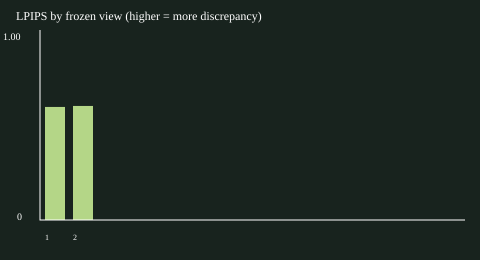
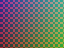
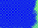
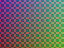
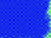

# SimReady frozen-view evaluation
Camera-aligned base reconstruction only. Detector consistency is not detection accuracy. No edited proxies are evaluated.
Dataset: synthetic_plane (synthetic). Split: test; 2 views.
## Measured per-view means
| Metric | Mean |
|---|---:|
| psnr_db | 14.866909899415147 |
| ssim | 0.5779041976199925 |
| lpips | 0.5976316928863525 |
| depth_mae_m | 0.027954871980488204 |
| depth_rmse_m | 0.050844949393344746 |
| depth_completeness | 0.974609375 |
Detector totals: {"real_count": 0, "rendered_count": 0, "matched_count": 0, "disappeared_count": 0, "appeared_count": 0, "empty_both": 2}
Geometry accuracy: N/A (no aligned ground-truth mesh).
## Failure ranking
Sorted by measured LPIPS, descending; inspect images and raw predictions.
- frame_00007: LPIPS=0.6003, PSNR=14.53172223152422, depth MAE=0.028324563481583666 m, disappeared=0, appeared=0.
- frame_00006: LPIPS=0.5950, PSNR=15.202097567306073, depth MAE=0.02758518047939274 m, disappeared=0, appeared=0.
## Limits
- Synthetic unit-test fixture; not real data or a reconstruction.
- Small split blocks lack spatial separation; not an evaluation benchmark.
- One sequence with temporally correlated held-out views; no population or statistical significance claim.
- No ground-truth object annotations: no precision, recall or mAP; a detector can share errors across domains.
- Fixed confidence/IoU/alpha thresholds are declared heuristics, not certified readiness thresholds.
- Whole-image sRGB RGB metrics and LPIPS include holes/background; no exposure or pose adjustment on test views.
- Depth MAE/RMSE use only finite positive GT/prediction with alpha >= threshold; completeness is separate.
- Means weight each view equally. Infinite exact-match PSNR is null with an exact-match flag; finite means exclude it.
- Class mismatch candidates are spatially matched unmatched boxes, not verified semantic errors.
- No aligned ground-truth mesh; Chamfer and F-score N/A. Coarse TSDF accuracy is unmeasured.
Protocol/config, input hashes, environment/weight hashes, raw predictions and per-view diagnostics are adjacent JSON/CSV files. The report contains no edited-scene evaluation.


{
"rgb_mse": 0.03522311630943227,
"psnr_db": 14.53172223152422,
"rgb_exact_match": false,
"ssim": 0.5706388203677853,
"lpips": 0.600251317024231,
"depth_reference_pixels": 3072,
"depth_evaluated_pixels": 2969,
"depth_completeness": 0.9664713541666666,
"depth_mae_m": 0.028324563481583666,
"depth_rmse_m": 0.05133912421514896
}Detector: {"real_count": 0, "rendered_count": 0, "matched_count": 0, "disappeared_count": 0, "appeared_count": 0}


{
"rgb_mse": 0.03018493488081507,
"psnr_db": 15.202097567306073,
"rgb_exact_match": false,
"ssim": 0.5851695748721996,
"lpips": 0.5950120687484741,
"depth_reference_pixels": 3072,
"depth_evaluated_pixels": 3019,
"depth_completeness": 0.9827473958333334,
"depth_mae_m": 0.02758518047939274,
"depth_rmse_m": 0.05035077457154053
}Detector: {"real_count": 0, "rendered_count": 0, "matched_count": 0, "disappeared_count": 0, "appeared_count": 0}